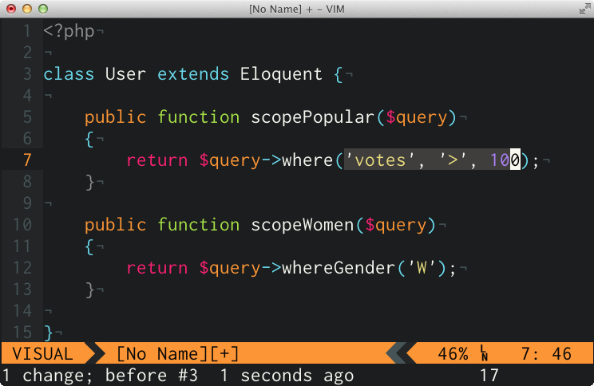
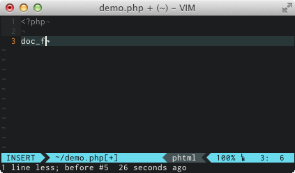
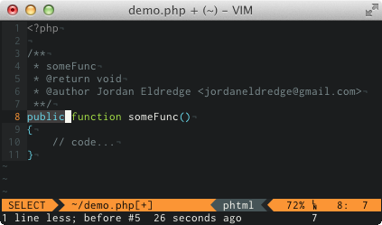
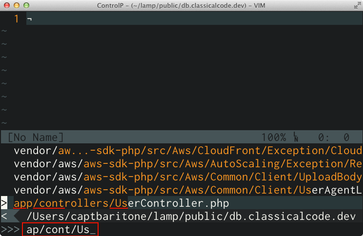
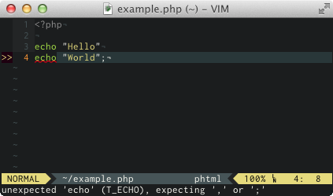

What does that mean?
Non-modal editors use key "chords"
Vim is different
Every key is available
Each key represents a word
Words can be combined into sentences
"The beginning of understanding the Zen of Vi comes when you realize that you are not memorizing key-bindings, but rather, you are learning a language."
What is a noun?

h j k l
w
$
}
d w
c $
v }
10 words
21 commands
Commands grow exponentially
Learn words not hot keys
Compose don't memorize
I was resistant to config files
Keep all your configuration files in a public repository
Clone on every computer
Easily restore your setup
Makes customizing your editor viable
Pay attention to pain points
Vim may have a built-in solution to your problem
Maybe there's a plugin
Annoyances I solved with Vim
Edit your .vimrc
Add the Ultisnips Plugin
 Add the CtrlP Plugin
Add the Syntastic Plugin
Your editor is your most important tool
Choose one you can customize
Choose Vim!
Easy to record issues quickly
Easy to record progress on an issue
Your work is Googleable
github.com/captbaritone/dotfiles
Questions or feedback: @captbaritone
github.com/captbaritone/intro-to-vim